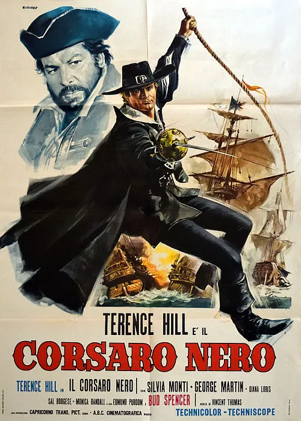

1971 · 27 tracce
Musiche di Gino Peguri.
27 tracce dell’edizione Digitmovies 2018 (album e versioni alternative). Musiche di Gino Peguri: è il film del 1971, distinto dall’omonimo film del 1976.
Gli elenchi documentano le edizioni pubblicate; la presenza di ciascuna traccia nel montaggio del film non è certificata.
Brani e ascolti
- 01
Nel mar dei caraibi
3:01ITA MUSIC
- 02
Gli amori di Isabella
2:30Archivio Gino Peguri official
- 03
Calipso dei corsari
3:05ITA MUSIC
- 04
Posada de Maria
1:46ITA MUSIC
- 05
Il pirata mattacchione
1:23ITA MUSIC
- 06
Orza qui poggia lí (Titoli)
2:24ITA MUSIC · Stesso tema · variante non confermata · Il video propone la versione inglese di Orza qui, poggia lì.
- 07
All'arrembaggio!
3:01ITA MUSIC
- 08
Pirati in agguato
1:27ITA MUSIC
- 09
Duello e morte
2:47Video non identificato · collegamento a una ricerca
- 10
Isabella a corte
2:09ITA MUSIC
- 11
Il vicerè di spagna
2:31ITA MUSIC
- 12
Coro dei corsari
2:43ITA MUSIC
- 13
Nel mar dei caraibi (film version)
1:39Archivio Gino Peguri official · Stesso tema · variante non confermata
- 14
Orza qui poggia lí (english version)
2:21ITA MUSIC
- 15
Posada de maria (long version)
2:18ITA MUSIC
- 16
Calipso dei corsari (alternate version)
2:00ITA MUSIC
- 17
Isabella a corte (alternate version)
2:36ITA MUSIC
- 18
Orza qui poggia lí (instr.)
1:27ITA MUSIC · Stesso tema · variante non confermata
- 19
Duello e morte (alternate version)
1:31ITA MUSIC
- 20
Pirati in agguato (alternate version)
1:57ITA MUSIC
- 21
Orza qui poggia lí (off vocal version)
2:27ITA MUSIC
- 22
Il pirata mattacchione (alternate version)
1:32ITA MUSIC
- 23
Il vicerè di spagna (alternate version)
1:39ITA MUSIC
- 24
Nel mar dei caraibi (alternate version)
1:38Archivio Gino Peguri official · Stesso tema · variante non confermata
- 25
All’arrembaggio! (alternate version)
1:49ITA MUSIC
- 26
Gli amori di isabella (alternate version)
1:55ITA MUSIC
- 27
Orza qui poggia lí (instr.# 2)
1:05ITA MUSIC · Stesso tema · variante non confermata
Fonti e riferimenti
- Scheda del film e creditiConsultata il 3 ottobre 2026.
- Edizione e lista delle tracceConsultata il 3 ottobre 2026.
- Digitmovies — edizione 1971, Gino PeguriConsultata il 3 ottobre 2026.
- Locandina — Il corsaro neroConsultata il 3 ottobre 2026.